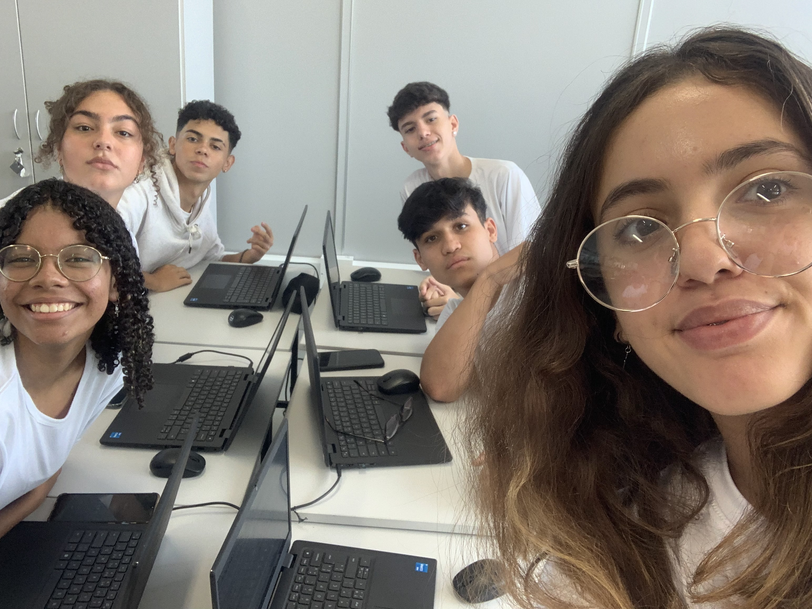

Equipe Hefesto
Sobre Nós:
A Equipe Hefesto é uma equipe de estudantes cursando DS (Desenvolvimento de Sistema) no SENAI 564 (Valinhos) juntamente ao segundo ano do ensino médio na escola parceira SESI 299. O grupo é composto por 6 alunos sendo eles:Guilherme Rocha, Isadora Marcondes, João Oliveira, Maria Rita Gomes, Nickolas Lira e Thayna Vazzoler.
Integrantes:
.Guilherme Rocha
Não estava presente.
.Isadora Marcondes
Estudante do Curso de Desenvolvimento de Sistema,Isadora de 16 (dezesseis) anos, também cursa atualmente o segundo ano do Ensino Médio. A mesma ama cozinhar e pretende futuramente cursar biologia ou jornalismo.
.João Victor
João de 16 (dezesseis) anos, amante pela arte de ouvir música, está cursando o segundo ensino médio na escola SESI Valinhos 299, e juntamente disso, o curso de Desenvolvimento de sistema no SENAI. O mesmo diz que ainda não se decidiu sobre a profissão que pretende cursar.
.Maria Rita Gomes
Estudante do SESI Valinhos, Maria Rita de 15 (quinze) anos também cursa desenvolvimento de sistemas no SENAI de Valinhos. Ela ama a área de artes, principalmente a dança, e futuramente pretende continuar nessa mesma área.
.Nickolas Lira
Nickolas de 16 (dezesseis) anos, atualmente cursa Desenvolvimento de Sistema no SENAI, juntamente ao segundo ano do ensino médio na escola SESI Valinhos, gosta muito de jogar bola com os amigos e pretende ser desenvolvidor.
.Thayná Vazzoler
Tayná de 16 (dezesseis) anos, que ama jogar videogames, está atualmente cursando o segundo ano do ensino médio na escola SESI Valinhos e o curso de Desenvolvimento de Sistema no SENAI, e pretende ser desenvolvedora também.

Equipe Hefesto: Maria Rita, Isadora, João, Guilherme, Nickolas e Thayná.